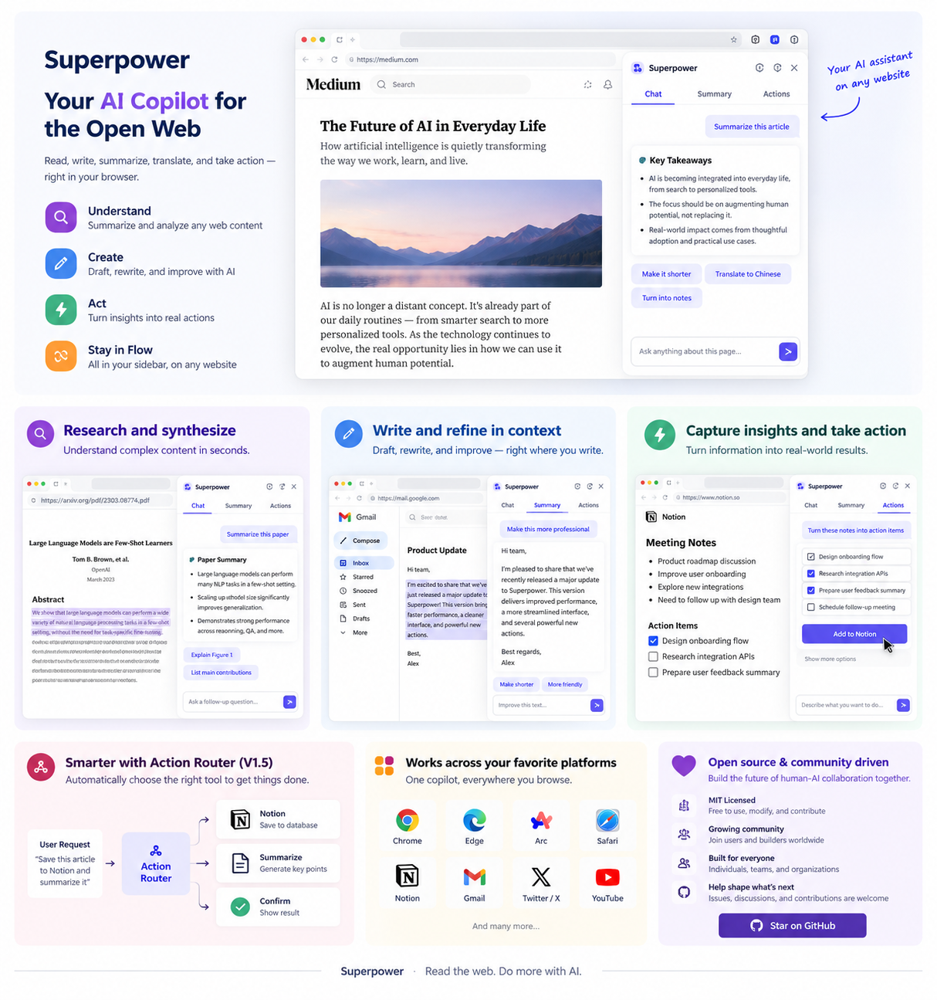

Browser-native MCP
Connect supported AI websites to local or remote MCP servers and return tool results to the active conversation.
Use the AI chat you already have as the reasoning surface, and MCP as the execution layer. Superpower connects browser conversations to real tools while keeping execution reviewable.

Superpower adds an MCP execution layer around browser and desktop workflows instead of forcing you into a separate agent interface.
Connect supported AI websites to local or remote MCP servers and return tool results to the active conversation.
Keep guarded actions inspectable before they run, with explicit tool visibility and automation controls.
Save selected text with source metadata, organize research context, and hand structured material to compatible MCP destinations.
Surface compatible notes, mail, calendar, task, messaging, and file-storage actions through the same controlled MCP path.
Map natural-language intent to schema-backed actions and multi-step workflows with explicit cross-step bindings.
MIT-licensed source code, extensible integrations, browser support, and a native desktop MCP workspace.
Choose the browser extension when the conversation is your workspace, or the desktop app when you want a dedicated MCP control surface.
Best for: browser-native AI workflows.
Best for: managing MCP connections and actions from one desktop workspace.
Documentation, policies, source code, and support resources for Superpower.